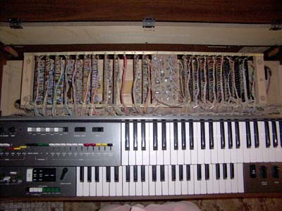

|
The organ as a source of synthesizer parts.
Yamaha Organs
Once again I have parted out a few old organs, this time by Yamaha. One was given to me, another cost a massive $50 on ebay, and the third was sitting in the rain outside the local op-shop. They were eager for me to take it. The first was a basic model similar to the BK4, and the second a B-30AR, which was a top of the line spinet, and the third an older B-2. The fourth was a B35, a low level intermediate spinnet, and the fifth was a B-805, a high end intermediate spinet. (The B-805 was not actually parted out.)
What parts in a Yamaha are of use?
This of course depends on the model of organ you buy. Here's what these contained:
- Keyboards.
Yamaha keyboards have slightly narrower keys than American organs, and a softer touch. Personally I don't like them, so I never used them, but they may be to your liking. They are of the switch-under-key design. The contact arrangements vary between models.
There was more metal in the older B-2 keyboard, and these were only 37 keys, versus the 44 keys of the others.
- Pedal board
These had one octave of pedals, plastic and metal construction.
- Amplifier and speakers.
The BK-4 contained a single amplifier rated at 15 watts, and a single 12" speaker.
The B-30AR contained 5 speakers. The "Main" speakers were 12" 60W, 8" 15W, and a 2" tweeter. The rotary speaker is a bizarre rectangular design, with an associated 2" tweeter. Two amplifiers, most likely 15 watts each.
The B-2 has a single 12" speaker. The amp appears to be an early variant of their 15 watt unit.
The B-35 has 2" and 12" speakers. The amp is 30 watts.
The B-805 has 2", 4.75" and 12" speakers. The amp is 30 watts.
The BK-4, B-35 and B-805 all employ simulated rotating speakers, though the BK-4 "spacious sound" was simply amplitude modulated. The latter two employ some form of phase shifting or filtering as well, in an attempt to accurately simulate the rotating speaker. Close but no cigar, because the sound source remains stationary, giving it a very monophonic feel.
- Expression pedal
A reasonable all-plastic design, using photo-cells. One used two cells, the other one. These I have hijacked for use in my Schober.
- Cabinet.
Yamaha cabinets of this era are made of laminated plywood. If nothing else, the wood makes great shelves!
There is some chipboard used in the older B-2.
- Reverb Tank.
B-2, BK-4 and B-30AR all had the same single spring, unshielded reverb unit. The units resonate horribly when used with the organ, but can be a lot of fun when integrated into a synthesizer.
The B-35 had no reverb at all, while the B-805 actually employs a twin spring unit.
- Rhythm Unit.
The BK-4 and B-30AR had similar rhythm units. Neither was particularly brilliant. One used ICs for the pattern generation while the other was discrete. I did build one into the synth, but found it more difficult to integrate, and generally inferior to the Farfisa Matador LCR unit I have also integrated.
The B-35 had 12 rhythm patterns while the B-805 has 16.
The B-2 has no rhythm section at all.
- Chorus generator.
The first Yamaha organ I have come across with a chorus generator is the B-805. It is a monophonic unit, as is the whole organ. I have heard better.
- Other parts.
In the Yamaha there are two types of "Tabs" or "Stops". The ones controlling speakers etc. are switches. The ones affecting tone-color are "draw-bars" - in reality a potentiometer with limited movement. They are used in a manner similar to slide pots, but are in reality a short-arc rotary pot.
In the earlier organs is an individual unit. In the later organs they are PC mounted and all somewhat smaller.
In the three earlier examples. much of the circuitry is discrete, the exception being the top-octave generator and divider chains in the later models. Everything is run from negative 12 volts, with a few additional negative voltages used on the note generator board.
The B-2 uses individual oscillators for the top octave and is entirely transistorized.
The B-35 and B-805 use dedicated integrated circuits. The keyboards are scanned, and in the case of the B-35, is limited to 7 note polyphony on the upper manual.
Wire. In the discrete models there's heaps of it. All of it is flex, though it is mighty fine. Plenty of colored shielded cable too - again all very fine. I have successfully made patch cords from this shielded wire, but they are certainly for home use only. The later models use only a few flat ribbon cable busses.
The BK-4 Yamaha
The circuit boards are in a simple "rack" just behind the manuals.
The remainder of the organ is pretty much empty.
The B-30AR. I have removed the roll-top lid by this stage. The organ was full of junk - music, pencils, pens, bangles, doilies, all no doubt which had been put on the lid when it was closed, then lost as the lid rolled back.

The circuit boards are again in a simple "rack" just behind the manuals.
There is more down below in this model. Both amplifiers, and the speakers. Though not visible, the reverb spring is at the bottom.
The rotary speaker. Notice how the rotating speaker passes in front of it's associated tweeter each revolution, thus modulating the sound from tweeter.
The B-2 Yamaha. I don't think there was a smaller model. If there was, there wasn't much else they could have left out!
The circuit boards are on a pair of rails just behind the manuals.
The remainder of the organ is very empty. The black box is the expression pedal. The white box is the cover over the foot pedal switches. Between the two piles of bright orange foam (which is completely rotten) is the reverb spring. The speaker is obvious. The remainder of the box is merely to give the impression of substantiality. Obviously it wasn't particularly difficult to make combo organs using the same technology - simply omit the large empty box!
The B-35 Yamaha.
Under the keyboard of the B-35 Yamaha. Note the diode matrix key scanning. PCBs: left- filters and tabs, center- main board, right- amp/psu.
The B-805 Yamaha.
The B-805 Yamaha. Note the mostly empty cabinet, complete with plastic brackets, suggesting these are shipped knocked down to save on costs.
Article, art & design copyright 1999 by Ken Stone
Modular Synth Home Disclaimer
|